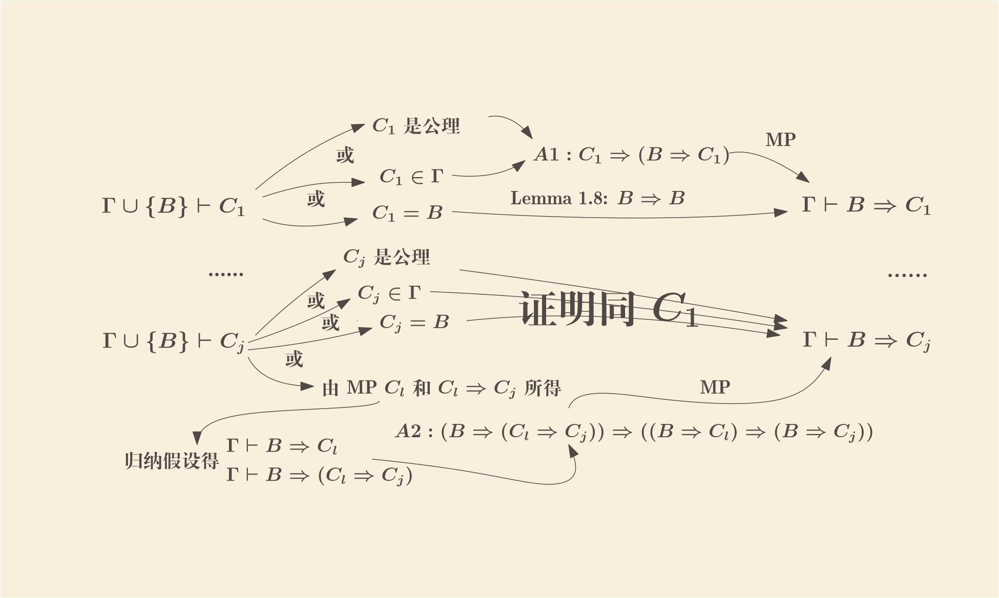

Chapter 1: The Propositional Calculus (1.4)
2021-12-22
1.4 An Axiom System for the Propositional Calculus
真值表方法能为我们解答很多问题，但接下来的更复杂的部分是无法使用真值表来解答的； 因此要引入新的方法：formal axiomatic theories 形式化公理理论
- Formal theory
-
一个形式化1理论（formal theory）
\(\mathcal{S}\) 包含如下这些：
- 拥有一个可数（也即可以 coutable infinite）的符号（symbol）集合， 一段有限长度的符号序列形成表达式（expression）
- 表达式集合中有一个子集称之为合式公式集（set of well formed formulas，wff）， 并且有有效方法检验一条表达式是否是合式公式
- 合式公式集中有一个子集称之为公理集（set of axioms)， 并且有有效方法检验一条合式公式是否是公理，这时可以称 \(\mathcal{S}\) 为公理理论
- 合式公式之间有有限条演绎规则（rules of inference） \(R_1, R_2, ..., R_n\)； 对于任意一个 \(R_i\)，有一个唯一的正整数 \(j\)，只要给出任意一个有 \(j\) 条合式公式的集合以及一条合式公式 \(B\)， 有有效方法能判断该集合以及 \(B\) 是否是 \(R_i\) 关系；如果是的话， 则称 \(B\) 是该集合通过 \(R_i\) 得出的直接结果（direct consequence）
- Proof
- 一个证明（proof）是一系列的合式公式 \(B_1, B_2, ..., B_k\)2，其中对于任意一个 \(B_i\)，要么它是一个公理， 要么是之前一些合式公式的直接结果
- Thorem
- \(\mathcal{S}\) 中的一个定理（theorem）是一个合式公式，它是一个证明里的最后一个公式，该证明就是这个定理在 \(\mathcal{S}\) 中的证明
对于一个公理理论，虽然有有效方法检验一条合式公式是否是公理，但一般而言并没有有效方法检验一条定理是否有证明； 如果有这么个方法，则称该理论 decidable，否则 undecidable
- Consequence
-
合式公式 \(C\) 被称之为一个合式公式集
\(\Gamma\)
的结果（consequence），如果： 存在一系列的合式公式
\(B_1, B_2, ..., B_k\)，其中 \(B_k\) 是 \(C\)，且对于任意一个 \(B_i\)，要么它是一个公理，
要么它在 \(\Gamma\)
中，要么是之前一些合式公式的直接结果
- 这个系列称之为从 \(\Gamma\) 推出 \(C\) 的证明
- 而 \(\Gamma\) 中的公式称之为该证明的假设或前提（hypotheses or premisses）
- 用符号 \(\Gamma \vdash C\) 标记之；如果需要区分处理多种理论，则添加理论下标 \(\Gamma \vdash_{\mathcal{S}} C\)
- 如果 \(\Gamma = \{H_1, ..., H_m\}\) 是有限集合，则可以写 \(\{H_1, ..., H_m\} \vdash C\)
- 如果 \(\Gamma\) 是空集，则可以写 \(\varnothing \vdash C\) 或简化成 \(\vdash C\)，这种情况下 \(C\) 其实就等价于是一个定理了
现在我们为为命题逻辑引入这么一个形式化公理理论
- \(\mathcal{L}\)
-
包含如下
\(() \neg \Rightarrow\) 以及 \(A_1, A_2, ...\) 是符号集合，前者称为联结词原语（primitive connectives）， 后者这些 \(A_i\) 称为 statement letters
合式公式由如下定义
- 所有的 statement letters 是合式公式
- 如果 \(B, C\) 是合式公式，则 \((\neg B), (B \Rightarrow C)\) 也是
- 当且仅当一个表达式可以通过上述两种方式构造出来才是合式公式
如果 \(B, C, D\) 是合式公式，则下面这些是公理3
- A1: \((B \Rightarrow (C \Rightarrow B))\)
- A2: \(((B \Rightarrow (C \Rightarrow D)) \Rightarrow ((B \Rightarrow C) \Rightarrow (B \Rightarrow D)))\)
- A3: \((((\neg C) \Rightarrow (\neg B)) \Rightarrow (((\neg C) \Rightarrow B) \Rightarrow C))\)
注意这里这些公理是有无限多的，因为合式公式的数量是无限多的
唯一一条演绎规则是 modus ponens （简称 MP）：\(C\) 是 \(B\) 和 \((B \Rightarrow C)\) 的直接结果
-
其他联接符为：
- \((B \wedge C)\)：\(\neg (B \Rightarrow \neg C)\)
- \((B \vee C)\)：\((\neg B) \Rightarrow C\)
- \((B \Leftrightarrow C)\)：\((B \Rightarrow C) \wedge (C \Rightarrow B)\)
Lemma 1.8
对于所有的合式公式 \(B\)，有 \(\vdash_{\mathcal{L}} B \Rightarrow B\)
- \(((B \Rightarrow ((B \Rightarrow B) \Rightarrow B)) \Rightarrow ((B \Rightarrow (B \Rightarrow B)) \Rightarrow (B \Rightarrow B)))\) A2 的一个实例
- \((B \Rightarrow ((B \Rightarrow B) \Rightarrow B))\) A1 的一个实例
- \(((B \Rightarrow (B \Rightarrow B)) \Rightarrow (B \Rightarrow B))\) MP 2 和 1 获得
- \((B \Rightarrow (B \Rightarrow B))\) A1 的又一个实例
- \((B \Rightarrow B)\) MP 4 和 3 获得，证毕
Exercise 1.47
\(\vdash_{\mathcal{L}} (\neg B \Rightarrow B) \Rightarrow B\)
- \((((\neg B) \Rightarrow (\neg B)) \Rightarrow (((\neg B) \Rightarrow B) \Rightarrow B))\) A3 实例
- \((((\neg B) \Rightarrow B) \Rightarrow B)\) MP Lemma 1.8 和 1 获得，证毕
\(B \Rightarrow C, C \Rightarrow D \vdash_{\mathcal{L}} B \Rightarrow D\)
- \(((C \Rightarrow D) \Rightarrow (B \Rightarrow (C \Rightarrow D)))\) A1 实例
- \((B \Rightarrow (C \Rightarrow D))\) MP 前提 \((C \Rightarrow D)\) 和 1 获得
- \(((B \Rightarrow (C \Rightarrow D)) \Rightarrow ((B \Rightarrow C) \Rightarrow (B \Rightarrow D)))\) A2 实例
- \(((B \Rightarrow C) \Rightarrow (B \Rightarrow D))\) MP 2 和 3 获得
- \((B \Rightarrow D)\) MP 前提 \((B \Rightarrow C)\) 和 4 获得，证毕
\(B \Rightarrow (C \Rightarrow D) \vdash_{\mathcal{L}} C \Rightarrow (B \Rightarrow D)\)
- \(((B \Rightarrow (C \Rightarrow D)) \Rightarrow ((B \Rightarrow C) \Rightarrow (B \Rightarrow D)))\) A2 实例
- \(((B \Rightarrow C) \Rightarrow (B \Rightarrow D))\) MP 前提和 1 获得
- \((((B \Rightarrow C) \Rightarrow (B \Rightarrow D)) \Rightarrow (C \Rightarrow ((B \Rightarrow C) \Rightarrow (B \Rightarrow D))))\) A1 实例
- \((C \Rightarrow ((B \Rightarrow C) \Rightarrow (B \Rightarrow D)))\) MP 2 和 3 获得
- \(((C \Rightarrow ((B \Rightarrow C) \Rightarrow (B \Rightarrow D))) \Rightarrow ((C \Rightarrow (B \Rightarrow C)) \Rightarrow (C \Rightarrow (B \Rightarrow D))))\) A2 实例
- \(((C \Rightarrow (B \Rightarrow C)) \Rightarrow (C \Rightarrow (B \Rightarrow D)))\) MP 4 和 5 获得
- \((C \Rightarrow (B \Rightarrow C))\) A1 实例
- \((C \Rightarrow (B \Rightarrow D))\) MP 7 和 6 获得，证毕
\(\vdash_{\mathcal{L}} (\neg C \Rightarrow \neg B) \Rightarrow (B \Rightarrow C)\)
TODO
Proposition 1.9 (Deduction Theorem)
演绎定理4
如果 \(\Gamma\) 是一个合式公式集，\(B\) 和 \(C\) 也是合式公式；则如果 \(\Gamma, B \vdash C\)，则 \(\Gamma \vdash B \Rightarrow C\)； 特别地（\(\Gamma\) 为空的时候），如果 \(B \vdash C\)，则 \(\vdash B \Rightarrow C\) （Herbrand, 1930）
令 \(C_1, C_2, ..., C_n\) 是从 \(\Gamma \cup \{B\}\) 推出 \(C\) 的证明，其中 \(C\) 即 \(C_n\)， 因此如果可以用归纳法（induction）证明 \(\Gamma \vdash B \Rightarrow C_j, 1 \le j \le n\) 则可得证
首先 \(C_1\) 要么是公理，要么是在 \(\Gamma\) 中，要么就是 \(B\)，因为它是证明序列中第一项，只能是公理或前提； 由公理 A1 得 \(C_1 \Rightarrow (B \Rightarrow C_1)\)，前两种情况就可根据 MP 推出 \(B \Rightarrow C_1\)； 第三种情况直接运用 Lemma 1.8：\(B \Rightarrow B\)
现假设 \(\forall k < j, \Gamma \vdash B \Rightarrow C_k\)，下面证明 \(\Gamma \vdash B \Rightarrow C_j\)
同样 \(C_j\) 要么是公理，要么是在 \(\Gamma\) 中，要么就是 \(B\)， 要么是 \(C_l\) 和 \(C_m\) 通过 MP 推出的（因此 \(C_m\) 形如 \(C_l \Rightarrow C_j\)，且 \(l < j\) 以及 \(m < j\)）； 前三种情况的证明方式同 \(C_1\)，最后一种情况下，由归纳假设有
- \(\Gamma \vdash B \Rightarrow C_l\) (h1)
- \(\Gamma \vdash B \Rightarrow (C_l \Rightarrow C_j)\) (h2)
又由公理 A2 有 \(\vdash (B \Rightarrow (C_l \Rightarrow C_j)) \Rightarrow ((B \Rightarrow C_l) \Rightarrow (B \Rightarrow C_j))\)， 连续运用 h2 和 h1 到上述公理实例，即可得出 \(\Gamma \vdash B \Rightarrow C_j\) 5

Corollary 1.10
a\(B \Rightarrow C, C \Rightarrow D \vdash B \Rightarrow D\)
这其实是前面 Exercise 1.47 里的第二题， 只要证明了 \(B \Rightarrow C, C \Rightarrow D, B \vdash D\) 就可以通过 Deduction Theorem 获证（简单多了）
- \(B \Rightarrow C\)
- \(C \Rightarrow D\)
- \(B\)
- \(C\) MP 3 和 1 获得
- \(D\) MP 4 和 2 获得
b\(B \Rightarrow (C \Rightarrow D), C \vdash B \Rightarrow D\)
证明类似上面
Lemma 1.11
a\(\neg\neg B \Rightarrow B\) 双重否定消除（Double Negation Elimation，DNE）
只要证明了 \(\neg \neg B \vdash B\) 即可通过 DT 得证
- \(\neg \neg B\) Hyp
- \(\neg \neg B \Rightarrow (\neg B \Rightarrow \neg \neg B)\) A1
- \(\neg B \Rightarrow \neg \neg B\) MP 1 和 2
- \(\neg B \Rightarrow \neg B\) Lemma 1.8
- \((\neg B \Rightarrow \neg \neg B) \Rightarrow ((\neg B \Rightarrow \neg B) \Rightarrow B)\) A3
- \(B\) 5 连续 MP 3 和 4 即可
b\(B \Rightarrow \neg\neg B\) 双重否定引入（Double Negation Introduction，DNI）
只要证明了 \(B \vdash \neg \neg B\) 即可通过 DT 得证
- \(B\) Hyp
- \(B \Rightarrow (\neg \neg \neg B \Rightarrow B)\) A1
- \(\neg \neg \neg B \Rightarrow B\) MP 1 和 2
- \(\neg \neg \neg B \Rightarrow \neg B\) 双重否定消除
- \((\neg \neg \neg B \Rightarrow \neg B) \Rightarrow ((\neg \neg \neg B \Rightarrow B) \Rightarrow \neg \neg B)\) A3
- \(\neg \neg B\) 对 5 连续 MP 4 和 3 即可
c\(\neg B \Rightarrow (B \Rightarrow C)\) （爆炸原理 Principle of Explosion/Vacuous Truth ?）
只要证明了 \(\neg B, B \vdash C\) 即可通过两次 DT 得证
- \(\neg B\) Hyp
- \(\neg B \Rightarrow (\neg C \Rightarrow \neg B)\) A1
- \(\neg C \Rightarrow \neg B\) MP 1 和 2
- \(B\) Hyp
- \(B \Rightarrow (\neg C \Rightarrow B)\) A1
- \(\neg C \Rightarrow B\) MP 4 和 5
- \((\neg C \Rightarrow \neg B) \Rightarrow ((\neg C \Rightarrow B) \Rightarrow C)\) A3
- \(C\) 对 7 连续 MP 3 和 6 即可
其实也同时证明了 \(B \Rightarrow (\neg B \Rightarrow C)\)
d\((\neg C \Rightarrow \neg B) \Rightarrow (B \Rightarrow C)\) 换质换位律-逆 （Contraposition）
只要证明了 \(\neg C \Rightarrow \neg B, B \vdash C\) 即可通过两次 DT 得证
- \(B\) Hyp
- \(B \Rightarrow (\neg C \Rightarrow B)\) A1
- \(\neg C \Rightarrow B\) MP 1 和 2
- \(\neg C \Rightarrow \neg B\) Hyp
- \((\neg C \Rightarrow \neg B) \Rightarrow ((\neg C \Rightarrow B) \Rightarrow C)\) A3
- \(C\) 对 5 连续 MP 4 和 3 即可
e\((B \Rightarrow C) \Rightarrow (\neg C \Rightarrow \neg B)\) 换质换位律 （Contraposition）
只要证明 \(B \Rightarrow C, \neg C \vdash \neg B\) 即可通过两次 DT 得证
- \(\neg C\) Hyp
- \(\neg C \Rightarrow (\neg \neg B \Rightarrow \neg C)\) A1
- \(\neg \neg B \Rightarrow \neg C\) MP 1 和 2
- \(B \Rightarrow C\) Hyp
- \(\neg \neg B \Rightarrow C\) 用 DNE 和 DT 易证 \(B \Rightarrow C \vdash \neg \neg B \Rightarrow C\)
- \((\neg \neg B \Rightarrow \neg C) \Rightarrow ((\neg \neg B \Rightarrow C) \Rightarrow \neg B)\) A3
- \(\neg B\) 对 6 连续 MP 3 和 5 即可
f\(B \Rightarrow (\neg C \Rightarrow \neg (B \Rightarrow C))\)
- \(B, B \Rightarrow C \vdash C\) 易知
- \(B \vdash (B \Rightarrow C) \Rightarrow C\) DT
- \(B \vdash ((B \Rightarrow C) \Rightarrow C) \Rightarrow (\neg C \Rightarrow \neg (B \Rightarrow C))\) Lemma 1.11#e
- \(B \vdash \neg C \Rightarrow \neg (B \Rightarrow C)\) MP 2 和 3
- \(\vdash B \Rightarrow (\neg C \Rightarrow \neg (B \Rightarrow C))\) DT
g\((B \Rightarrow C) \Rightarrow ((\neg B \Rightarrow C) \Rightarrow C)\)
只要证明 \(B \Rightarrow C, \neg B \Rightarrow C \vdash C\) 即可通过两次 DT 得证
- \(B \Rightarrow C\) Hyp
- \((B \Rightarrow C) \Rightarrow (\neg C \Rightarrow \neg B)\) Lemma 1.11#e
- \(\neg C \Rightarrow \neg B\) MP 1 和 2
- \(\neg B \Rightarrow C\) Hyp
- \((\neg B \Rightarrow C) \Rightarrow (\neg C \Rightarrow \neg \neg B)\) Lemma 1.11#e
- \(\neg C \Rightarrow \neg \neg B\) MP 4 和 5
- \((\neg C \Rightarrow \neg \neg B) \Rightarrow ((\neg C \Rightarrow \neg B) \Rightarrow C)\) A3
- \(C\) 对 7 连续 MP 6 和 3 即可
Proposition 1.12
\(\mathcal{L}\) 中每一个定理都是一个重言式
\(\mathcal{L}\) 中的每一条公理都是重言式（用前面介绍的反推法很容易验证，即如果不是重言式， 则 \(X \Rightarrow Y\) 仅当 \(X=T, Y=F\) 时成立，一项项地赋值最后推出矛盾证明不可能）， 由 Proposition 1.2，若 \(X\) 和 \(X \Rightarrow Y\) 这两条是重言式，则 \(Y\) 也是；由于 \(\mathcal{L}\) 中所有定理都是从公理（重言式）MP （唯一一条演绎规则）而得，故所有定理仍然是重言式
Lemma 1.13
本 Lemma 是用来证明所有重言式都是 \(\mathcal{L}\) 中的定理
令 \(B\) 是一个合式公式，并令 \(X_1, X_2, ..., X_k\) 是 \(B\) 中出现的 statement letters；对于这些 statement letters 的任意一种取值组合，如果 \(X_j\) 为 \(T\)，令 \(X^{'}_ j\) 为 \(X_j\)，否则为 \(\neg X_j\)； 如果 \(B\) 为 \(T\)，令 \(B^{'}\) 为 \(B\)，否则为 \(\neg B\)，
则有 \(X^{'}_ 1, ..., X^{'}_ k \vdash B^{'}\)
例子
\[ \begin{array} {c c c c} X_1 & X_2 & \neg(\neg X_1 \Rightarrow X_2) & \\ T & T & F & X_1, X_2 \vdash \neg\neg(\neg X_1 \Rightarrow X_2) \\ F & T & F & \neg X_1, X_2 \vdash \neg\neg(\neg X_1 \Rightarrow X_2) \\ T & F & F & X_1, \neg X_2 \vdash \neg\neg(\neg X_1 \Rightarrow X_2) \\ F & F & T & \neg X_1, \neg X_2 \vdash \neg(\neg X_1 \Rightarrow X_2) \\ \end{array} \]
对 \(B\) 中出现的 \(\neg\Rightarrow\) 的数量 \(n\) 进行归纳法证明，
\(n=0\) 的情况下，\(B\) 就是 \(X_1\) 一个 statement letter 了，易知 \(X_1 \vdash X_1, \neg X_1 \vdash \neg X_1\)
现假设小于 \(n\) 时均成立（归纳假设）
- 若 \(B\) 形如 \(\neg C\)（\(C\) 中的联结符数量要比 \(n\) 少），假如在特定的取值组合下
- \(C\) 取 \(T\)（则 \(B\) 取 \(F\)，\(B^{'}\) 为 \(\neg B\)），根据归纳假设有 \(X^{'}_ 1, ..., X^{'}_ k \vdash C\)， 由 Lemma 1.11#b 以及 MP 可得 \(X^{'}_ 1, ..., X^{'}_ k \vdash \neg\neg C\)， 而 \(\neg\neg C\) 即 \(\neg B\) 即 \(B^{'}\)
- \(C\) 取 \(F\)（则 \(B\) 取 \(T\)，\(B^{'}\) 为 \(B\)），根据归纳假设有 \(X^{'}_ 1, ..., X^{'}_ k \vdash \neg C\)， 而 \(\neg C\) 即 \(B\) 即 \(B^{'}\)
- 若 \(B\) 形如 \(C \Rightarrow D\)（\(C\) 和 \(D\) 中的联接符数量要比 \(n\) 少），假如在特定的取值组合下
- \(C\) 取 \(F\)（则 \(B\) 取 \(T\)，\(B^{'}\) 为 \(B\)），根据归纳假设有 \(X^{'}_ 1, ..., X^{'}_ k \vdash \neg C\)， 由 Lemma 1.11#c 以及 MP 可得 \(X^{'}_ 1, ..., X^{'}_ k \vdash C \Rightarrow D\)， 而 \(C \Rightarrow D\) 即 \(B\) 即 \(B^{'}\)
- \(D\) 取 \(T\)（则 \(B\) 取 \(T\)，\(B^{'}\) 为 \(B\)），根据归纳假设有 \(X^{'}_ 1, ..., X^{'}_ k \vdash D\)， 有 axiom A1 以及 MP 可得 \(X^{'}_ 1, ..., X^{'}_ k \vdash C \Rightarrow D\)， 而 \(C \Rightarrow D\) 即 \(B\) 即 \(B^{'}\)
- \(C\) 取 \(T\) 且 \(D\) 取 \(F\)（则 \(B\) 取 \(F\)，\(B^{'}\) 为 \(\neg B\)）， 根据归纳假设有 \(X^{'}_ 1, ..., X^{'}_ k \vdash C\) 以及 \(X^{'}_ 1, ..., X^{'}_ k \vdash \neg D\)， 由 Lemma 1.11#f 以及两次 MP 可得 \(X^{'}_ 1, ..., X^{'}_ k \vdash \neg (C \Rightarrow D)\)， 而 \(\neg (C \Rightarrow D)\) 即 \(\neg B\) 即 \(B^{'}\)
Proposition 1.14 (Completeness Theorem)
完备性定理6
若 \(\mathcal{L}\) 的合式公式 \(B\) 是一个重言式，则它也是 \(\mathcal{L}\) 中的一个定理
假如 \(B\) 是一个重言式，令 \(X_1, ..., X_k\) 是其 statement letters，对于任意的取值组合，根据 Lemma 1.13， 有 \(X^{'}_ 1, ..., X^{'}_ k \vdash B\)，这是因为 \(B\) 总是取值 \(T\)（重言式），故 \(B^{'}\) 总是 \(B\)
若 \(X_k\) 取值 \(T\)，有 \(X^{'}_ 1, ..., X_k \vdash B\)， 由演绎定理得 \(X^{'}_ 1, ..., X^{'}_ {k-1} \vdash X_k \Rightarrow B\)
若 \(X_k\) 取值 \(F\)，有 \(X^{'}_ 1, ..., \neg X_k \vdash B\)， 由演绎定理得 \(X^{'}_ 1, ..., X^{'}_ {k-1} \vdash \neg X_k \Rightarrow B\)
由 Lemma 1.11#g 以及上述两个式子 MP 可得 \(X^{'}_ 1, ..., X^{'}_ {k-1} \vdash B\)
反复执行上述不断地消除前提，最终得到 \(\vdash B\)
Corollary 1.16
\(\mathcal{L}\) 是一致的，即不存在合式公式 \(B\) 使得 \(B\) 和 \(\neg B\) 都是定理
假如两者都是定理，由 Proposition 1.12 两者都是重言式，而 \(B\) 和 \(\neg B\) 不可能都是重言式
特别注意：
当且仅当不是所有合式公式均为定理时，\(\mathcal{L}\) 是一致的
如果一致，则只要有一条定理，其取反后一定不是定理；另一方面，如果该理论不一致， 且包含 Lemma 1.11#c ，\(\vdash_{\mathcal{L}} \neg B \Rightarrow (B \Rightarrow C)\) 以及 MP 演绎规则，则可以推演出所有公式均为定理（因为 \(\neg B\) 和 \(B\) 均可证明）
Exercise 1.50
若 \(B\) 不是一个重言式，假如将 \(B\) 作为公理加入到 \(\mathcal{L}\) 中而得到的 \(\mathcal{L^+}\) 是不一致的
注：即将 \(B\) 中的所有 statement letters 一一对应地替换为任意 statement forms 均为公理，如同 A1~A3 那样
（421页答案）：由于 \(B\) 不是重言式，也就是说存在一个 statement letters 的取值组合，使得其取值为 \(F\)， 在该取值组合下，如果一个 statement letter 取值为 \(T\)，则将它替换为 \(X \vee \neg X\) ，否则替换为 \(X \wedge \neg X\)， 替换后得出的 statement form 为 \(C\)，易知 \(C\) 总是取值 \(F\)，因此 \(\neg C\) 为重言式，由 Proposition 1.14 得 \(\vdash_{\mathcal{L}} \neg C\)，因此 \(\vdash_{\mathcal{L^+}} \neg C\)；另一方面，\(C\) 也是 \(\mathcal{L^+}\) 的公理， 即 \(\vdash_{\mathcal{L^+}} C\)，得出不一致
“形式化” 的含义应该是指这些符号仅仅应当看作符号而已，例如 \(\mathcal{L}\) 中的 \(\neg \Rightarrow\)， 而不应该联系上意义，只不过构造出来的系统 “恰好” 跟传统的逻辑符号有一致的表现而已（后面有推论 \(\mathcal{L}\) 中的合式公式是一个定理，当且仅当它是重言式的时候）↩︎
证明是一个合式公式序列，应该是不允许无限长的（？），但应该可以是任意长度，例如通过归纳法产生的证明↩︎
初看这几条公理，觉得实在是有点不明白为啥要将公理定义得那么复杂，不过看了下面演绎定理的证明过程， A1/A2 似乎就是为了归纳证明该定理而设的，而 A3 实际上是反证法↩︎
粗略查了下 wiki Deduction theorem 所说， 这里给出的应该是 Hilbert-style 类的体系：倾向于多个公理，而只有少量的演绎规则（例如这里只有一个 MP）； 与之相反的是所谓的自然演绎体系：倾向于很少公理（甚至于没有），而有许多的演绎规则↩︎
另外补充一下 Deduction Theorem 的逆向，见 https://math.stackexchange.com/a/986878
如果 \(\Gamma \vdash B \Rightarrow C\) 则有 \(\Gamma, B \vdash C\)
- 显而易见 \(\Gamma, B \vdash B \Rightarrow C\)，因为额外添加 \(B\) 作为前提并不影响证明序列 \(X_1, X_2, ..., X_n\)， 其中 \(X_n = B \Rightarrow C\)
- 令 \(X_{n+1} = B\) 前提
- 则 \(X_{n+2} = C\) MP \(X_{n+1}\) 和 \(X_n\) 获得
- \(X_1, ..., X_{n+2}\) 构成了 \(\Gamma, B \vdash C\) 的证明
所以总括而言，命题逻辑里前提可以在 \(\vdash\) 两边左右横跳↩︎
所谓 Copmleteness 完备性，即逻辑上成立的式子在该形式化理论中都有证明； 于之相对应的是 Soundness，即有证明的都必须是逻辑上成立的；感觉 sound 应该是更基础一点的要求： 如果一个系统能推导出逻辑上不成立的又有什么用呢？且直觉觉得 soundness 的证明应该是要简单一点的， 只需要公理以及演绎规则都能保持逻辑成立的性质即可↩︎